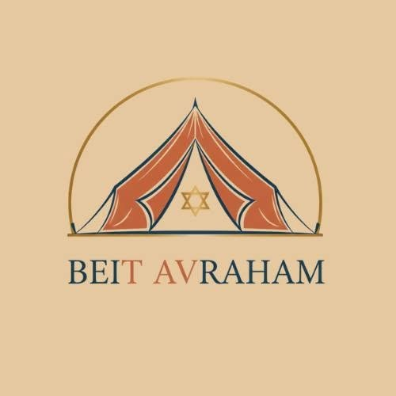

EP 04ז
¿De dónde proviene el mandamiento de cumplir con el Shabat?
Fuentes de la Torá, las preguntas de los sabios y el sentido sagrado del día.
Escuchar
BEIT AVRAHAM · PROPUESTA PARA REVISIÓN
Cuatro pantallas construidas con los tokens reales del proyecto —paper #fdf9f1, ink #18363d, gold #ad823b, Merriweather y Plus Jakarta Sans— para que la discusión sea sobre el formato y no sobre un estilo nuevo. Nada de esto está implementado: es una maqueta estática.

Beit AvrahamEstudio de Torá · ComunidadESCUCHAR · PODCAST
El audio original de cada shiur, con sus capítulos. Suscribite desde tu app de podcasts y la clase te acompaña fuera de la pantalla.
SERIE · SHABAT
Cuatro clases para recorrer el mandamiento del Shabat desde las fuentes de la Torá hasta su vivencia en comunidad.
beithavraham.org/podcast/shabat/feed.xml
Fuentes de la Torá, las preguntas de los sabios y el sentido sagrado del día.
La primera plegaria del día y la psicología de la gratitud matutina.
Cómo transmitir la historia de generación en generación a través de preguntas.
SUSCRIPCIÓN
Buscá «Beit Avraham» en Apple Podcasts o Spotify, o pegá el enlace RSS en cualquier lector. Los episodios nuevos aparecen solos.
Son las clases originales, sin síntesis ni resumen. Si en el futuro se publica un resumen generado por IA, aparecerá marcado como tal y no con la voz del docente.
SHABAT: LOS FUNDAMENTOS · EPISODIO 03
La primera plegaria del día: reconocer la vida con conciencia y bendición.
Análisis del texto de Modo Aní en el Shulján Aruj y la psicología de la gratitud matutina. La clase recorre el pasaje desde la literalidad del texto hasta su traducción práctica en la mañana del alumno.
Audio original de la clase. No es una síntesis ni un resumen generado. Cuando existan episodios resumidos por IA, se publicarán aparte y marcados como tales.
CAPÍTULOS
Los capítulos se generan desde los fragmentos del shiur
PODCAST · SERIE SHABAT
Cuatro clases para recorrer el mandamiento del Shabat desde sus fuentes.
Shabat: los fundamentos · 30 min